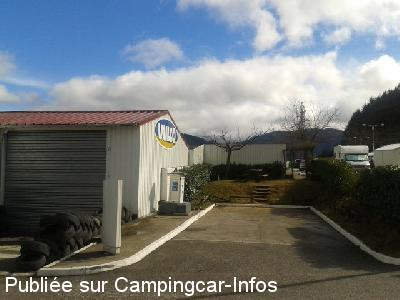
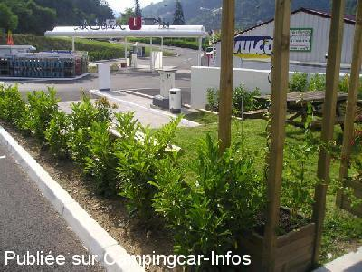
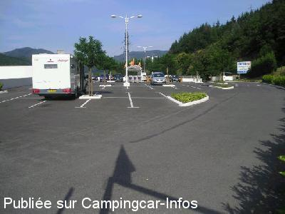

ASN = Aire de services avec stationnement nuit possible de :
LE CHEYLARD
(N° 116)
Accès/adresse :
Chemin de Lapra
Parking supermarché
07160 LE CHEYLARD
Parking supermarché
07160 LE CHEYLARD
Latitude : (Nord) 44.912° Décimaux ou 44° 54′ 43′′
Longitude : (Est) 4.44135° Décimaux ou 4° 26′ 28′′
Tarif : 2015
Stationnement gratuit
Services : 2 €
Type de borne : RACLET
Services :


Petits commerces
Autres informations :
Ouvert toute l'année
Eau coupée en période hivernale
Tel : +33(0)475 297 444

Le 15/03/2013 par Daniel 34

Le 14/07/2004 par cormoran 33

Le 14/07/2004 par cormoran 33
de
Josserand
le 26/08/2014 :
Nous avons stationné une nuit sur ce parking très calme sauf le matin avec les livraisons pour le magasin.
Le stationnement se fait au dessus du Super U, facile d'accès pour les courses proche de l'aire de vidange.
Nous avons stationné une nuit sur ce parking très calme sauf le matin avec les livraisons pour le magasin.
Le stationnement se fait au dessus du Super U, facile d'accès pour les courses proche de l'aire de vidange.
de
Daniel 34
le 15/03/2013 :
Une nuit "en passant" début mars 2013. Finalement très calme et bien pratique pour faire "les pleins" (carburant, gaz et frigo). Mais pas d'eau potable l'hiver.
Une nuit "en passant" début mars 2013. Finalement très calme et bien pratique pour faire "les pleins" (carburant, gaz et frigo). Mais pas d'eau potable l'hiver.
de
balibalo
le 19/07/2006 :
Bien 2€ pour services plus ou moins 100 litres d'eau. Pas facile de faire le plein car en cul de sac. Me suis mis sur le parking en haut avec long tuyeau car j'avais une remorque.
Bien 2€ pour services plus ou moins 100 litres d'eau. Pas facile de faire le plein car en cul de sac. Me suis mis sur le parking en haut avec long tuyeau car j'avais une remorque.